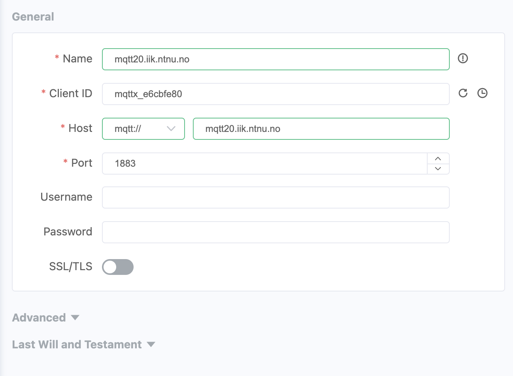

The deployment diagram below shows today's distributed setup:
The setup consists of at least three components:
The MQTT Broker: This can be the MQTT broker for this course (mqtt20.iik.ntnu.no) or a broker running on your local machine.
MQTTX: This is a generic MQTT client that is suitable for debugging MQTT-based applications. You can connect to an MQTT broker and subscribe and publish to topics.
Jupyter Notebooks: We use MQTT client in notebooks to show you how to program in Python. The application in the notebooks act as MQTT clients.
Note: When you work from home, you can work on your own MQTT broker too. However, other students not part of your home network may not be able to reach your MQTT broker. If you want to connect your applications and are in different networks (like in the last task) work with the central broker at NTNU, (mqtt20.iik.ntnu.no).
Tips for This Unit
Document your progress and the result of all experiments in a document.
Include screenshots
The tasks don't require much engineering work this week, so you have enough time to care about the details and the setup.
Most tasks are related to running code, which can be difficult in teams.
This requires special attention from the facilitator.
Make sure everyone is on board.
Distribute tasks, but make sure everyone covers all.
Try to work distributed on several PCs for the communication task. (You can run Broker, MQTTX and Python all on different computers, or run all on the same one. We recommend to try the distributed solution.)
Dare to ask questions, or repeat individually.
The programming tasks are important for the remainder of the course.
Task: Running MQTTX
MQTTX is a desktop application that connects to an MQTT broker and that can publish and subscribe to arbitrary topics.
This is a very tool useful during development.
Essentially, MQTTX is a MQTT client, and can as such connect to an MQTT broker, subscribe to topics and send messages to topics. This does not sound like much. However, MQTTX has a generic user interface, you can use MQTTX while you construct your application to see how the other system components publish messages, and you can also "inject" messages into the system, by publishing to any topic you want.
Using MQTTX is really simple, but because we have now talked about brokers, clients, publishers and subscribers, you may loose track and wonder what this MQTTX does: Think of it as a debugger for MQTT, and you can use it like Wireshark. Once the system is done, you don't need MQTTX anymore.
Add a connection by clicking on the + button. Enter the address mqtt20.iik.ntnu.no as hostname. Protocol mqtt:// is already set by default, and our port should be 1883. As name you can use the same as the hostname.
Click on Connect
You should get a green "Connected" message. If not, our broker might be down (contact me then) or you are not connected to the internet.

Publishing a Message
Once you are connected to a broker, and the broker is selected in the list to the left, you can publish a message to a topic using the interface in the lower right corner.
Write the topic in the field with the grey label Topic
Optionally select the QoS level.
In the text field below the topic you can write the payload of the message, and MQTTX gives you the possibility to show it as Plaintext or JSON (these two options are most suitable for us).
Click the send symbol on the lower right corner.
Subscribing to a Topic
Once you are connected, click on + New Subscription
Enter the topic. Include wildcards + and # as you need.
Set the QoS (default is 0)
Click on Confirm
You should now be subscribed to a topic. You can test this by sending a message as described above to that topic. You should then see that you have both sent and received that message in the conversation window.
Subscribe to a topic and then publish a message to that topic, so that you can see that it is sent back to you like in the screenshot above.
Observing Communication
Because MQTT uses the publish-subscribe pattern, the MQTTX can simply subscribe
to any topics that are interesting in your application and you can see
which messages are sent to these topics, without disturbing the
communication in the system.
Task: Observing a Public MQTT Broker
There are some public MQTT brokers to which anyone can connect.
Connect MQTTX to a public MQTT broker. (I usually use the MQTT broker of the Eclipse IoT project, with the address iot.eclipse.org and port 1883.)
Subscribe to topic #
Have a look at the incoming messages, the topic they are sent to, and their payload.
Task: Running Your Own MQTT Broker (Optional)
You can always use such a public broker for testing, but on most cases it is better to have your own broker running.
Install the Mosquitto MQTT Broker on your laptop. This is an open-source MQTT broker that is relatively easy to install and run.
This notebook explains Paho, the Python client for MQTT and connects to a broker.
MQTT Part 2 - Connect and Publish
This notebook extends the MQTT client and also publishes messages, forwarding to another topic.
MQTT Part 3 - MQTT and STMPY
This notebook shows you how to connect the MQTT client with state machines in STMPY.
Challenge: Quiz Show Buzzers
The tasks above did not require any programming from you so that you can focus on installing and setting up all the components as well as getting familiar with the APIs and how everything works.
You now should have very detailed knowledge about how MQTT works, and operate both clients and a broker.
You have also seen how we can connect MQTT with state machines written in STMPY.
MQTTX can act as an input and output device into the system, as it can send and receive arbitrary MQTT messages.
So the following task should be doable now:
Create a small and very prototypical system that realizes the timer and buzzers for a quiz.
The quiz master starts a 20 second timer after asking a question.
Any of the participants can press their buzzer, upon which the timer stops and the quiz master sees who presses first.
Create a central state machine to keep track of the timer and the incoming messages.
All participants use MQTTX as their interface to send in messages, which correspond to pressing a buzzer or resetting the timer.
Some hints for the delivery:
Sketch a state machine together.
Sketch the system with a deployment diagram and a sequence diagram.
Can you use this to separate into smaller teams that each work on a separate issue?
Prepare screenshots for your solution.
Rather build something simple that works than something large that doesn't.
Document your achievement in your document.
Put the document of your unit on Teams, into the folder for this week.